MORE ABOUT MUMBAI>
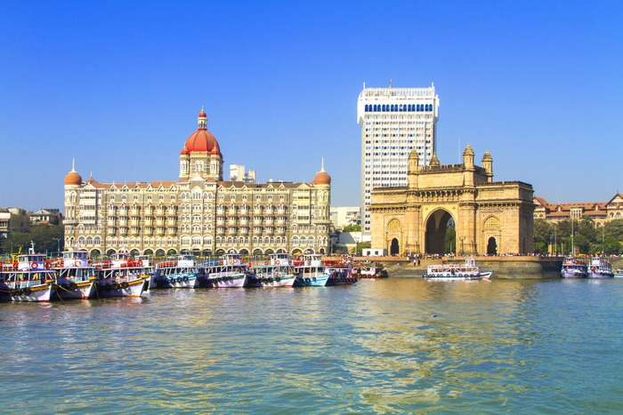
Gateway Of India
Landscape
City site
The city of Mumbai occupies a peninsular site on Bombay Island, a landmass originally composed of seven islets lying off the Konkan coast of western India. Since the 17th century the islets have been joined through drainage and reclamation projects, as well as through the construction of causeways and breakwaters, to form Bombay Island. East of the island are the sheltered waters of Mumbai (Bombay) Harbour. Bombay Island consists of a low-lying plain, about one-fourth of which lies below sea level; the plain is flanked on the east and west by two parallel ridges of low hills. Colaba Point, the headland formed on the extreme south by the longer of those ridges, protects Mumbai Harbour from the open sea.
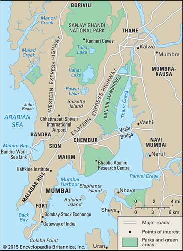
Mumbai:Metropolitan Area
The western ridge terminates at Malabar Hill, which, rising 180 feet (55 metres) above sea level, is one of the highest points in Mumbai. Between Colaba Point and Malabar Hill lies the shallow expanse of Back Bay. On a slightly raised strip of land between the head of Back Bay and the harbour is an area called the Fort, the site of the 17th-century British fortifications (little of which remains standing) within and around which the city grew; the area is now occupied chiefly by public and commercial offices. From Back Bay the land stretches northward to the central plain. The extreme northern segment of Mumbai is occupied by a large salt marsh.
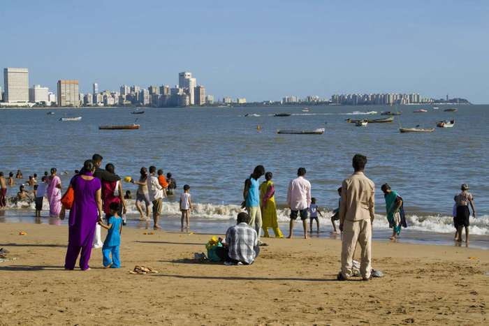
Mumbai: Girgaum Chowpatty
The old city covered about 26 square miles (67 square km), stretching from Colaba Point on the southern tip of Bombay Island to the areas known as Mahim and Sion on its northern coast. In 1950 Mumbai expanded northward, embracing the large island of Salsette, which was joined to Bombay Island by a causeway. By 1957 a number of suburban municipal boroughs and some neighbouring villages on Salsette were incorporated into Greater Mumbai—the metropolitan region surrounding Bombay Island and the city itself. Since then Greater Mumbai has continued to expand.
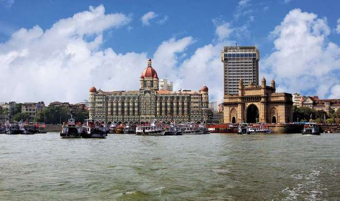
Mumbai Harbour
The natural beauty of Mumbai is unsurpassed by that of most other cities in the region. The entrance into Mumbai Harbour from the sea discloses a magnificent panorama framed by the Western Ghats mountain range on the mainland. The wide harbour, studded with islands and dotted with the white sails of innumerable small craft, affords secure shelter to ships, particularly when storms lash the coast. The largest of the harbour’s islands is Elephanta, which is famous for its 8th- and 9th-century Hindu cave temples.
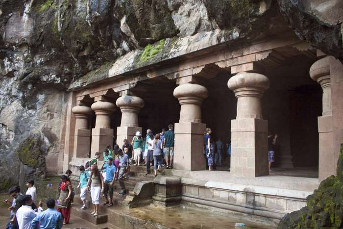
Elephanta Island: temple entrance
Typical trees in the city include coconut palms, mango trees, tamarinds, and banyan trees. Salsette Island was once the haunt of wild animals such as tigers, leopards, jackals, and deer, but those are no longer found there. Animal life now consists of cows, oxen, sheep, goats, and other domestic species, as well as monkeys. Birdlife includes vultures, pigeons, peacocks, cranes, and ducks.
Climate
The climate of Mumbai is warm and humid. There are four seasons. Cool weather prevails from December to February and hot weather from March to May. The rainy season, brought by monsoon winds from the southwest, lasts from June to September and is followed by the post-monsoon season, lasting through October and November, when the weather is again hot. Mean monthly temperatures vary from 91 °F (33 °C) in May to 67 °F (19 °C) in January. Annual rainfall is about 70 inches (1,800 mm), with an average of 24 inches (600 mm) occurring in July alone.
City layout
The older part of Mumbai is much built-up and devoid of vegetation, but the more affluent areas, such as Malabar Hill, contain some greenery; there are a number of open playgrounds and parks. In the course of urban expansion, some residential sections of Mumbai have fallen into a state of serious disrepair, while in other areas clusters of makeshift houses (often illegal “squatter” settlements) have arisen to accommodate the city’s expanding population. Moreover, an alarming amount of air and water pollution has been generated by Mumbai’s many factories, by the growing volume of vehicular traffic, and by nearby oil refineries.
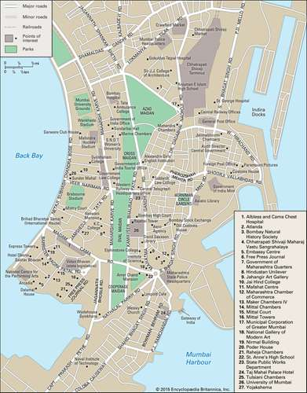
Mumbai: city centre
The financial district is located in the southern part of the city, in the Fort area. Farther south (around Colaba) and to the west along the Back Bay coast and on Malabar Hill are residential neighbourhoods. To the north of the Fort is the principal business district, which gradually merges into a commercial-residential area. Most of the older factories are located in that part of the city. Still farther north are more residential areas, and beyond them are newer industrial zones as well as some squatter districts and other areas of overcrowded and poorly maintained housing.
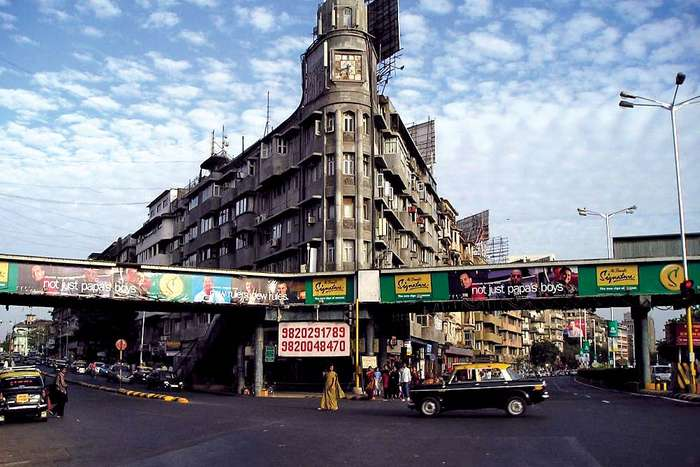
Mumbai: Street Scene
Housing is largely privately owned, though there is some public housing built by the government through publicly funded corporations or by private cooperatives with public funds. Mumbai is extremely crowded, and housing is scarce for anyone who is not wealthy. (For that reason, commercial and industrial enterprises have found it increasingly difficult to attract mid-level professional, technical, or managerial staff.) In an attempt to stem the ongoing immigration of unskilled labour that has increased the city’s indigent and homeless population, city planners have encouraged enterprises to locate across Mumbai Harbour—notably in Navi (“New”) Mumbai—and have banned the development and expansion of industrial units inside the city; their efforts, however, have been largely unsuccessful.
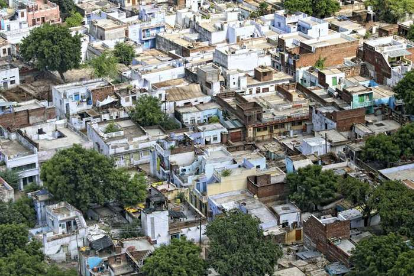
Mumbai: housing
Mumbai’s architecture is a mixture of florid Gothic Revival styles—characteristic of the United States and Britain in the 18th and 19th centuries—and contemporary designs. Many residential and commercial buildings constructed in the Gothic Victorian style during the period of British rule still stand today—most notably the Chhatrapati Shivaji Terminus (formerly Victoria Terminus), the city’s main train station and headquarters of India’s Central Railway company. The older administrative and commercial buildings are intermingled with skyscrapers and multistoried concrete-block buildings.
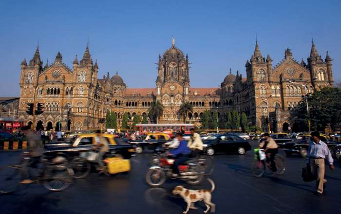
Mumbai: Chhatrapati Shivaji Terminus
People
Mumbai’s growth since the 1940s has been steady if not phenomenal. At the turn of the 20th century its population was some 850,000, by 1950 it had more than doubled, and over the next 50 years it increased nearly 10-fold to exceed 16 million. Population growth continued into the 21st century. The city’s birth rate is much lower than that of the country as a whole because of family-planning programs. The high overall growth rate is largely attributable to the influx of people in search of employment. Because of the limited physical expanse of the city, the growth in Mumbai’s population has been accompanied by an astounding increase in population density. By the early 21st century the city had reached an average of some 77,000 persons per square mile (29,500 per square km). Settlement is especially dense in much of the city’s older section; the wealthy areas near Back Bay are less heavily populated.
The city is truly cosmopolitan, and representatives of almost every religion and region of the world can be found there. Almost half the population is Hindu. Significant religious minorities include Muslims, Christians, Buddhists, Jains, Sikhs, Zoroastrians, and Jews. Almost every Indian language and many foreign languages are spoken in Mumbai. Marathi, the state language, is the dominant Indian language, followed by Gujarati, Hindi, and Bengali (Bangla). Other languages include Pashto, Arabic, Chinese, English, and Urdu.
Economy
Mumbai is the economic hub and commercial and financial centre of India. Its economic composition in some respects mirrors India’s unique mosaic of prosperity and technological achievement vis-à-vis impoverishment and underdevelopment. While Mumbai contains the Indian Atomic Energy Commission’s establishment, with its nuclear reactors and plutonium separators, many areas on the outskirts of the city continue to rely on traditional biogenic sources of fuel and energy (such as cow dung).
Manufacturing and technology
Although cotton textile manufacturing, through which Mumbai prospered in the 19th century, remains important to the city’s economy, it has lost much ground to newer industries, especially since the late 20th century. Production of metals, chemicals, automobiles, and electronics along with a host of ancillary industries are now among the city’s major enterprises. Other manufacturing activities, such as food processing, papermaking, printing, and publishing, also are significant sources of income and employment.
After years of lagging behind cities such as Bengaluru (Bangalore) and Hyderabad, Mumbai began developing its own information technology (IT) sector in the late 20th century. Technology companies were encouraged to move especially to the northern and eastern suburbs, drawn there by improvements in infrastructure and low rents. Of note are a special economic zone set up in the northern part of the city in 2000 and facilities for IT companies in Navi Mumbai.
Finance and other services
The Reserve Bank of India, the country’s central bank, is located in Mumbai. A number of other commercial banks, a government-owned life insurance corporation, and various long-term investment financial institutions also are based in the city. All of those institutions have attracted major financial and business services to Mumbai.
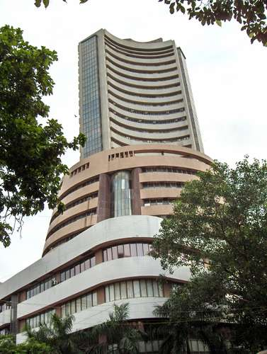
Mumbai: Bombay Stock Exchange
The Bombay Stock Exchange is the country’s leading stock and share market. Although a number of economic hubs sprang up around the country since independence and reduced the exchange’s pre-independence stature, it remains the preeminent centre in volume of financial and other business transacted and serves as a barometer of the country’s economy.
Transportation
Mumbai is connected by a network of roads to the rest of India. It is the railhead for the Western and Central railways, and trains from the city carry goods and passengers to all parts of the country.
During the early 1970s, in an effort to relieve road congestion, Salsette Island was linked to the mainland by a bridge across Thana Creek, the headwaters of Mumbai Harbour. More express highways and more bridges have been built since then. Notable additions to the road network are the Banda-Worli Sea Link (opened 2009), which bridges Mahim Bay on the west side of the city, and a new expressway between eastern Mumbai and Navi Mumbai (opened 2014) that supersedes the earlier Thana Creek bridge.
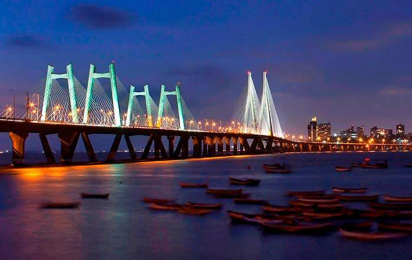
Mumbai: Banda-Worli Sea Link bridge
Air traffic is handled by Chhatrapati Shivaji International Airport in the northern part of the city. It consists of two terminals—domestic and international—which are about 3 miles (5 km) apart on either side of the runway system. A new international terminal opened in 2014, replacing an older facility. Mumbai is one of two principal air hubs in India—the other being Delhi—and handles most of the country’s international flights and a large proportion of its domestic service.
The facilities provided by the city’s harbour make Mumbai India’s principal western port. Although other major ports have sprung up on the west coast—Kandla, in the state of Gujarat, to the north; Marmagao, in the state of Goa, to the south; and Kochi (Cochin), in the state of Kerala, farther south—Mumbai still handles a significant portion of India’s maritime trade. The original port on the east side of Bombay Island was supplemented in 1989 by the opening of a large facility in Navi Bombay that handles containers and bulk liquid cargoes.
Suburban electric train systems provide the main public transportation, conveying hundreds of thousands of commuters within the metropolitan region daily. There are also thousands of taxis and auto-rickshaws fueled by liquid petroleum gas, which are identifiable by their iconic black-and-yellow painted bodies. In addition, a municipally owned bus fleet operates throughout the inner city and in parts of Navi Mumbai and Thane. Those services have been supplemented by a rapid-transit train system, the first line of which opened in 2014. The first portion of a monorail line in the city also began operating in 2014.